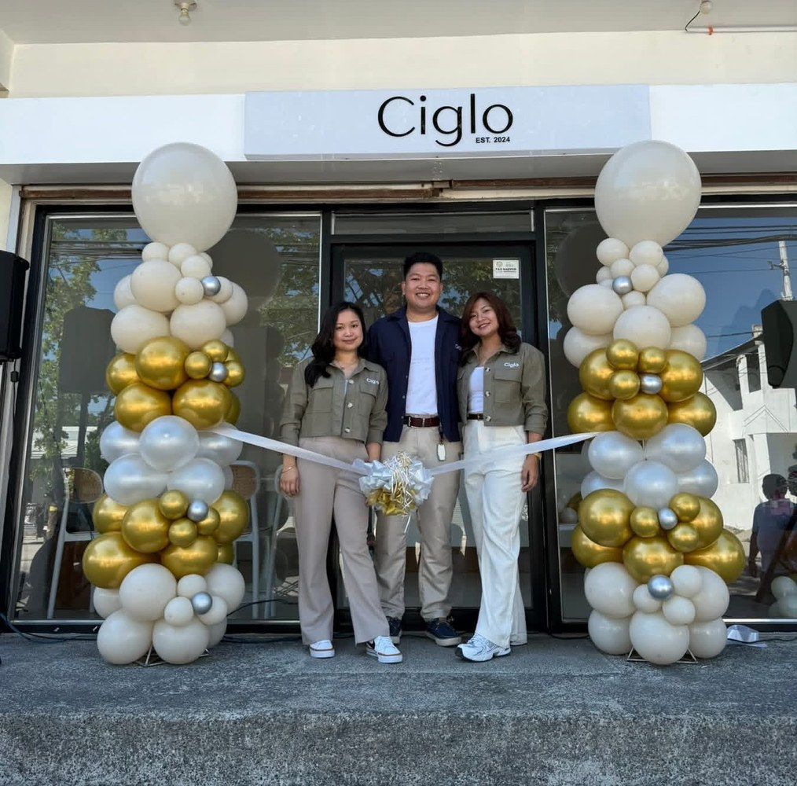

A Small Pause in a Busy World
Ciglo was created for people who need a breather in the middle of a busy day. We wanted to build a place that feels warm, familiar, and welcoming from the moment you arrive.
Inspired by our love for coffee and community, we opened Ciglo in 2024 with the goal of serving drinks that are crafted with care and shared in a space that feels comfortable to stay in.
Whether you are meeting friends, taking a quiet break, or simply craving your favorite cup, we want every visit to feel relaxed, personal, and worth coming back to.
More than a coffee shop, Ciglo is your everyday escape, one cup at a time.


Meet the Owners
The people behind every warm welcome.
Ciglo is shaped by the hands-on care of its owners, from the first cup served to the little details that make the shop feel familiar. Their goal is simple: make every guest feel at home.